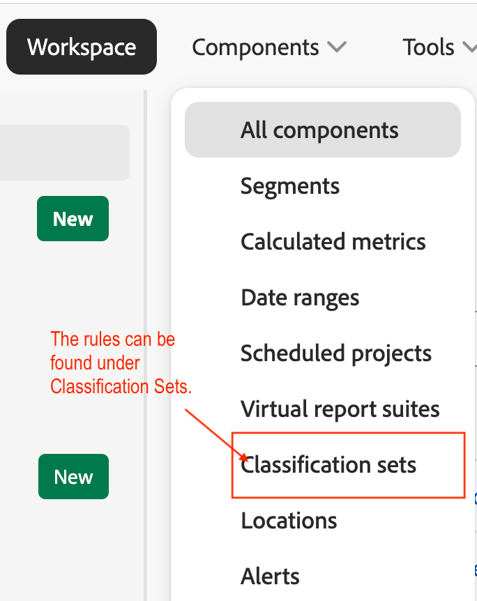
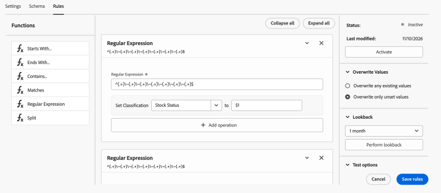
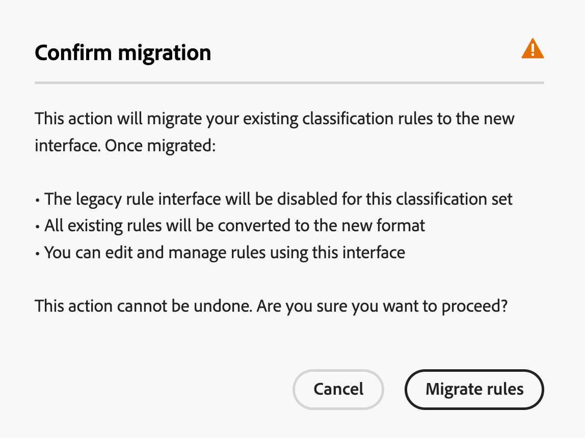
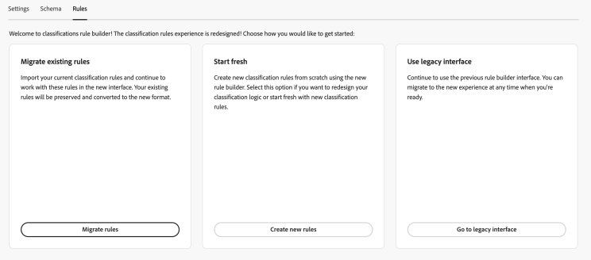
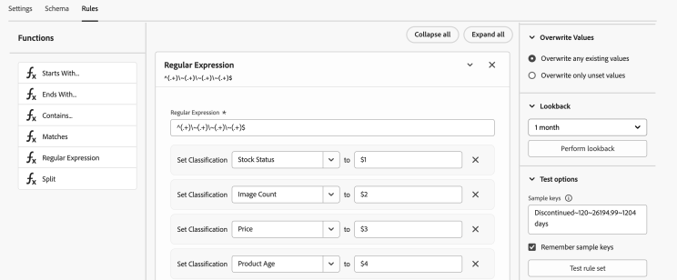
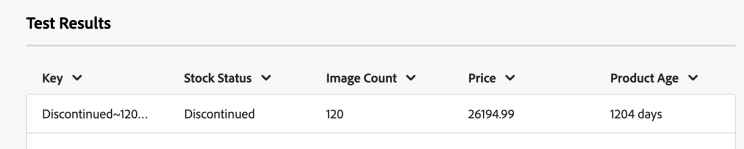

If your organization uses Adobe Analytics, mark February 28, 2027 on your calendar. That is when Adobe plans to retire the legacy Classification Rule Builder and move classification rule management to the new Classification Sets Rules experience.
At first glance, this may look like a routine interface update. But classifications often power the reports, dashboards, segments, and data feeds that business teams rely on every day. If your organization depends on automated classifications, now is a good time to understand what is changing, review your existing rules, and plan your migration.
What are classification rules?
Classification rules automatically organize raw tracking values into meaningful reporting categories. Instead of manually uploading classification files whenever new values appear, you define rules that process incoming values as they arrive.
Consider this campaign tracking code:
spring:email:promoA classification rule can split this value into three attributes:
- Season: Spring
- Channel: Email
- Offer Type: Promo
This makes campaign reporting easier to understand and maintain. Classification rules are especially useful for dimensions whose values change frequently, such as internal campaign codes, marketing tracking codes, product SKUs, content identifiers, and other structured tracking values.
What's changing?
Adobe is moving classification rule management into the newer Classification Sets experience. The rules now live inside the classification set itself, so you no longer manage them separately.
The difference comes down to how the rules are organized:
- Before (legacy Classification Rule Builder): You created rule sets separately, then associated each one with one or more report suites.
- Now (Classification Sets Rules): You create and manage rules directly within a classification set. Once activated, the rules apply to the report suites and dimensions subscribed to that set.
In short, rule management and classification configuration are now handled in one place. To find it, navigate to Components → Classification Sets.

One technical difference to understand
Pay close attention to how sub-classifications work in the new rule builder. In the new experience, a sub-classification uses the value of its parent classification, not the original raw value.
If your existing logic relies on the original raw value at multiple classification levels, your output may change after migration.
My recommendation: Don't assume that migrating your rules guarantees identical output. Test migrated rules with representative values, particularly where parent and sub-classification dependencies exist.
The good news: you can reclassify recent historical data
The new experience includes a lookback feature. After you activate your rules, you can apply them retroactively to historical data within a lookback period of 1 to 6 months. If you don't activate right away, you may still be able to classify recent data without starting over.
Data older than the supported lookback window cannot be reclassified through this feature, so don't wait until the deadline. Migrating early gives your team time to:
- Validate existing classification logic
- Identify reporting dependencies
- Reduce the risk of unexpected changes to dashboards and reports
- Resolve issues before the legacy experience is retired
What you'll see when you switch
Open your classification set and select the Rules tab. The first time you access the new rule builder, Adobe displays a welcome screen with three options.

1. Migrate existing rules
This option imports your existing legacy rules and converts them to the new format. It is the most straightforward path for organizations that want to keep their current classification logic while moving to the new experience.
Best for: Teams that want to transition existing rules with minimal redesign.
Before you confirm, note that migration is permanent. Adobe's confirmation dialog states that the legacy rule interface will be disabled for this classification set, that all existing rules will be converted, and that the action cannot be undone.

2. Start fresh
This option lets you build classification rules from scratch. It is a good opportunity to revisit older rules, simplify complicated conditions, remove redundant logic, and redesign your classification strategy.
Best for: Teams looking to clean up or restructure their classification logic.
Important: Confirming this option discards your existing rules. Document or export your current configuration before you proceed.
3. Continue using the legacy interface
If you aren't ready to migrate, you can keep working in the legacy interface for now. This gives your team time to assess dependencies and prepare, but it shouldn't become a reason to postpone indefinitely. Remember that the legacy experience is scheduled for retirement on February 28, 2027.
Best for: Teams that need more time to assess dependencies before migrating.
After you migrate or create rules, the welcome screen disappears and the Rules tab opens directly in the new rule builder.
Working with the new Classification Sets rule builder
Once you're in the new experience, the workflow is straightforward.

Step 1: Build your rules
Use the drag-and-drop builder to add functions such as Starts With, Ends With, Contains, Matches, Regular Expression, and Split. Each rule sets a classification value, and you can use capture groups such as $1 to pass parts of the matched value into it.
Rules run sequentially from top to bottom, so pay close attention to order and dependencies.

Here is a regular expression in action. The pattern ^(.+)\~(.+)\~(.+)\~(.+)$ matches a key made of four tilde-separated parts. Each capture group feeds one classification: $1 goes to Stock Status, $2 to Image Count, $3 to Price, and $4 to Product Age. The Test options panel on the right holds the sample key you want to check.
Step 2: Choose how values are overwritten
The right-hand panel includes an Overwrite Values setting. Choose Overwrite any existing values to replace current classifications, or Overwrite only unset values to leave existing classifications alone. Make this choice deliberately, because it determines whether your new rules change values that are already in reports.
Step 3: Test your rules
Before you activate anything, use the Test options section to enter representative sample values, then select Test rule set to validate the output. Testing matters most when you use regular expressions, multiple conditions, or parent and sub-classification relationships.
In this example, each part of the key landed in the expected classification: Discontinued, 120, 26194.99, and 1204 days. If a column is blank or shows an unexpected value, revise the rule and test again before you activate it.

Step 4: Activate and validate
When the results look right, activate the rule set and confirm that the expected classifications are being populated in your report suites.
Step 5: Perform a historical lookback
If you need to apply the rules to historical data, select a lookback period of 1 to 6 months and choose Perform lookback. This brings recent reporting in line with your new classification logic.
A practical migration checklist
Before you migrate, review these areas with your team:
- Inventory existing rules: Which report suites, dimensions, and variables depend on legacy classification rules?
- Identify reporting dependencies: Which Workspace projects, dashboards, segments, and data feeds rely on these classifications?
- Review existing logic: Should you migrate rules as they are, or clean up outdated conditions first?
- Validate sub-classifications: Do any rules depend on the original raw value at multiple classification levels?
- Test representative values: Do the migrated rules produce the expected outputs?
- Review subscriptions: Are the right report suites and dimensions subscribed to the classification set?
- Plan historical processing: Do you need the 1-to-6-month lookback?
- Validate downstream reporting: Do Workspace reports, dashboards, and data feeds still produce the expected results?
The bottom line
Retiring the legacy Classification Rule Builder is more than an interface change. It is an opportunity to review how your organization manages classification logic and keeps reporting consistent.
Review → Migrate → Test → Activate → Validate
Don't wait until February 2027 to discover that a critical dashboard depends on a rule that didn't migrate correctly. Start reviewing your configuration now, involve the teams responsible for reporting and analytics governance, and give yourself enough time to validate the transition.
Additional reading: Adobe Experience League: Classification Rule Builder
Have you started preparing for the new Classification Sets Rules experience? Are you planning to migrate your existing rules or use this opportunity to redesign them? Share your experience in the comments on the original LinkedIn article.
#AdobeAnalytics #DigitalAnalytics #MarketingAnalytics #DataGovernance #MarTech #AdobeExperienceCloud